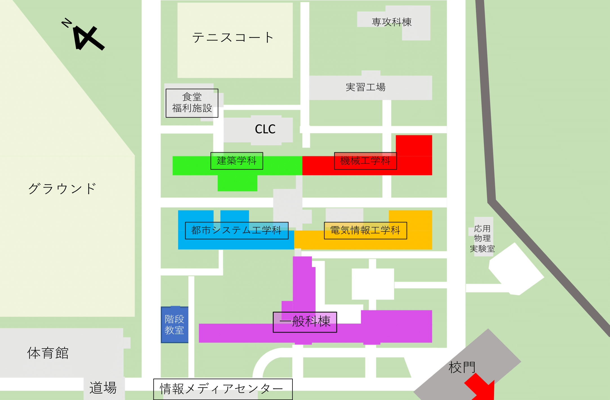

活動について
明石高専にはさまざまな教室があり、初見ではどこにあるのかわからないものもあります。 私たちCo+work21班は、この学校の学生も、外部からお越しになる方も学校がもっと使いやすくなればなと思い、学科棟などの地図と看板を作成・設置しました。 こちらの校内の案内サイトは完成(仮)しました。今後は機能追加等を中心に活動する予定です。 感想や改善案などもMicrosoft Formsにて随時募集しています。Formsはこちら
変更履歴